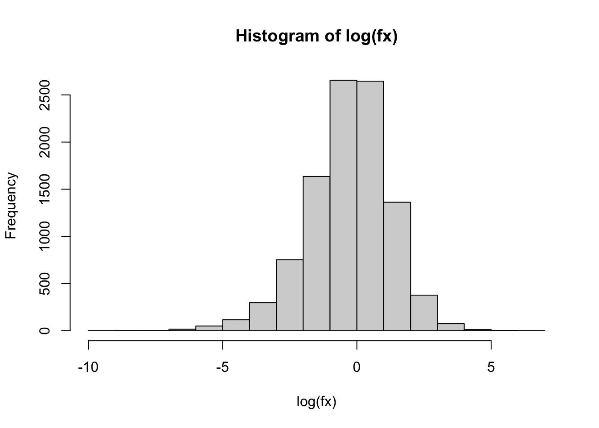
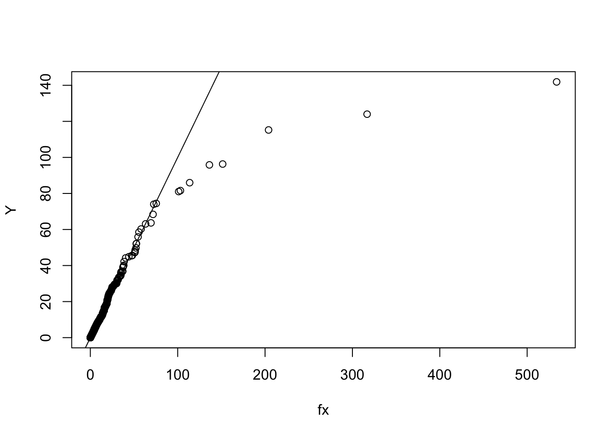
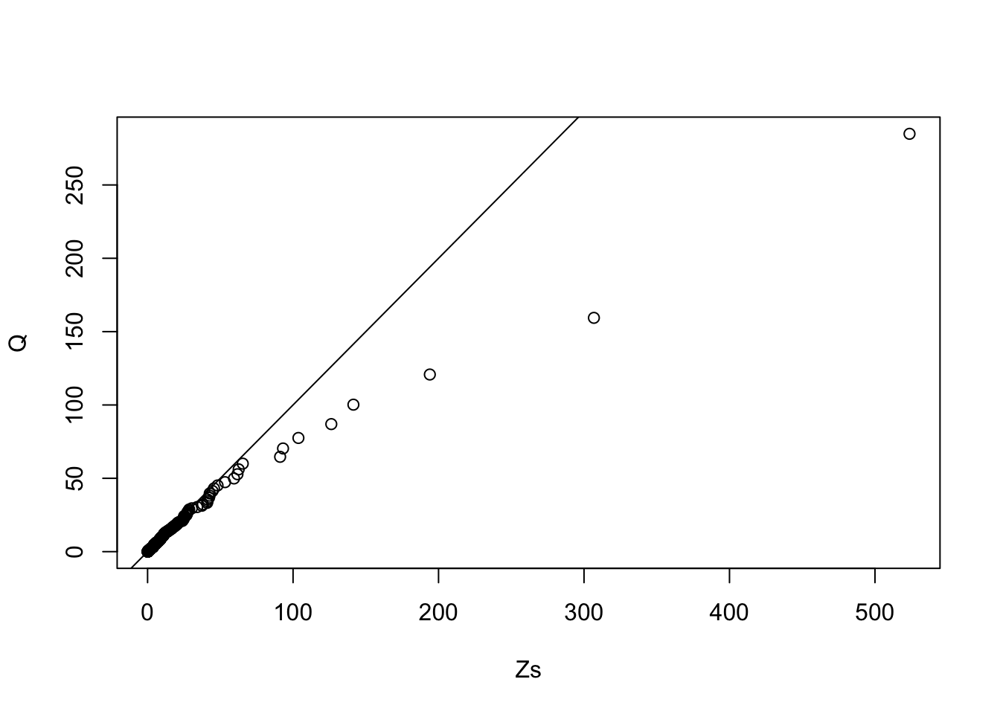
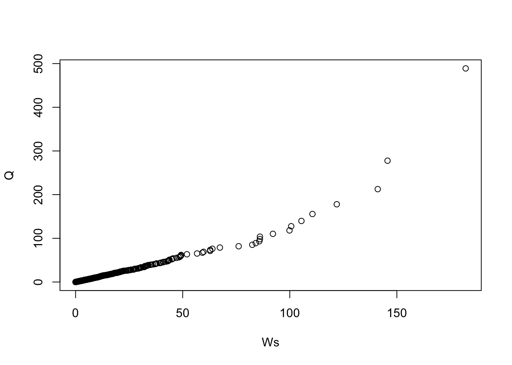

Chapter 17 W2021 Midterm
17.1 Q2
For this question you will generate GPD random variates and verify that their conditional excess distribution is also GPD.
17.1.1 Part A
- \([10\) points \(]\) Simulate \(n=10,000\) random variates from a \(\operatorname{GPD}(\gamma=.5, \sigma=1)\) distribution using the inverse CDF method from Q1.(d), and plot the histogram of their log-values.

17.1.2 Part B
- [15 points \(]\) Simulate another 10,000 random variates from \(\operatorname{GPD}(\gamma=.5, \sigma=1)\), but now use the mixture method from Q1.(e). Create a QQ-plot of the two sets of variates (from this and the previous part0), and comment whether they seem to come from the same distribution? (Hint: Use qqplot \((\mathrm{X}, \mathrm{Y})\), where \(\mathrm{X}, \mathrm{Y}\) are the values you generated.)

17.1.3 Part C
- [15 points] Take the values from Q2.(a) and calculate their excedances above 10, i.e. \(Z=X-10\) for values of \(X\) that are greater than 10. From Q1.(b), we know that \(Z\) must follow \(G P D(\gamma, \sigma+10 \gamma)\). Verify that the exceedances follow this distribution, by creating a QQ-plot of \(Z\)-values versus their theoretical quantiles.
sigma = 1
gamma = 0.5
u = 10
Z = (fx - u)[fx-u>0]
Zs = sort(Z) #need sorting for qqplot
nZ= length(Zs)
sigma_u = sigma + gamma * u
Q = sigma_u /gamma * ( (1 - ppoints(nZ) )^(-gamma) - 1 )
plot( Zs, Q ); abline(0,1)
17.1.4 Part D
- [10 points \(]\) Finally, verify through simulation that conditional exceedances of fattail distributions with tail index \(\alpha\) approach a GPD with \(\gamma=1 / \alpha\). Generate \(n=10,000\) values from a \(t(d f=4)\) distribution (i.e. \(\alpha=4)\) and take their absolute value (to avoid wasting values by symmetry). Calculate the exceedances above 10 again, and create their QQ-plot versus quantiles from a \(\operatorname{GPD}(\gamma=1 / \alpha, \sigma=1)\). (Note: the points in your QQ-plot should lie close to a straight line, but the slope does not need to be equal to 1 because of the arbitrary GPD scale \(\sigma=1\) ).
# t = abs(rt(10000,4))
W = abs( rt( 100000, 2 ) ) # why 2?
Ws = (W - u)[W-u>0]
Ws = sort(Ws)
nW= length(Ws)
Q = (1+u) * ( (1 - ppoints(nW) )^(-gamma) - 1 )
qqplot( Ws, Q )